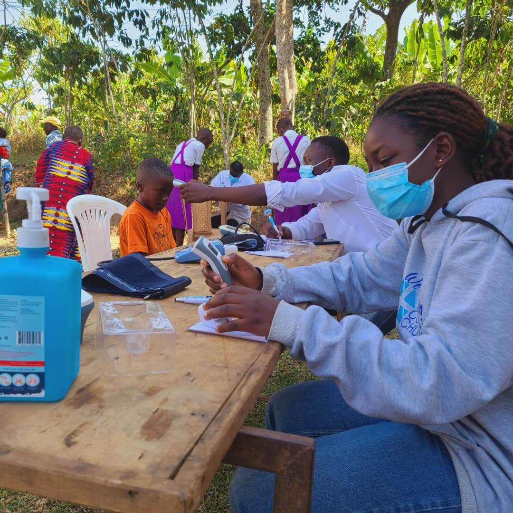

Community Health Outreach Camp

On the 15th and 16th of June 2025, Divine Fatherhood Ministries International (DFMI) held its first medical outreach camp in Bukuma village, Luwero District. This outreach was part of our broader commitment to community health, spiritual growth, and holistic transformation.
Reaching the Community
Over the two days, we reached approximately 300 community members, many of whom were silently battling conditions such as hypertension, diabetes mellitus, malaria, HIV/AIDS, dental complications, and eye problems. For many, this camp became a turning point—an opportunity to understand their health status for the very first time.
A Life-Changing Discovery
One of the most significant moments of the outreach was the identification of 6 women and 2 men living with HIV/AIDS who were previously unaware of their condition. Through compassionate counselling and guidance from professional counsellors, they were supported emotionally and connected to nearby health centers for continued care and management. This reflected DFMI's commitment not only to physical healing but also to dignity, awareness, and long-term wellbeing.
Spiritual Transformation
In alignment with our spiritual mission, the outreach also became a moment of transformation beyond physical health. Fifty members of the community made a decision to give their lives to Jesus Christ. They were connected to local pastors for continued discipleship and follow-up, ensuring their spiritual journey would be nurtured within the community.
Challenges & Lessons Learned
Despite the impact achieved, we faced challenges, particularly the lack of adequate medical equipment such as efficient drugs, sterilization tools like autoclaves, and diagnostic equipment including microscopes for more complex conditions. These limitations highlighted the need for stronger partnerships and resource support to expand our reach and serve even more effectively.
Gratitude & Commitment
Above all, we give thanks to God for enabling a successful outreach, for every life touched, and for the opportunity to serve both the physical and spiritual needs of the Bukuma community. This camp is just the beginning of our commitment to holistic community care.
Impact Summary
Community Members Reached
HIV/AIDS Cases Identified
Spiritual Conversions
Days of Service
Support Our Mission
Help us continue providing medical care, health education, and spiritual guidance to vulnerable communities across Luwero District.